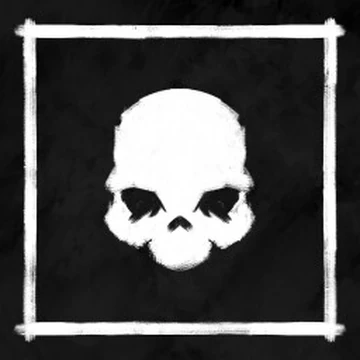
Звичайний привид без особливих здібностей. Легко зупиняється за допомогою розп’яття.
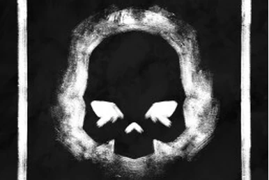
Може літати і не залишає слідів. Боїться солі.
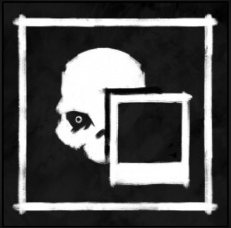
Зникає при фотографуванні. Сильно впливає на розум гравця.
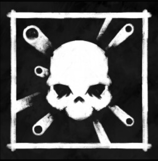
Любить кидати предмети. Чим більше предметів — тим небезпечніший.
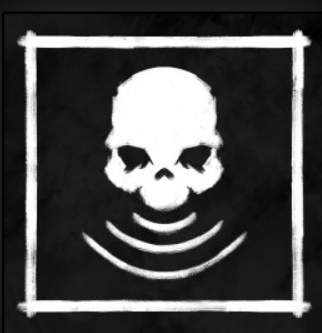
Полює тільки на одну ціль. Дуже небезпечний.
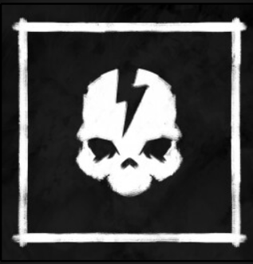
Швидкий, коли є електрика. Вимикай світло, щоб послабити його.
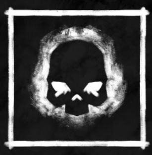
Сильніший у темряві. Часто вимикає світло.
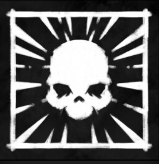
Дуже повільний, але стає надшвидким під час полювання.
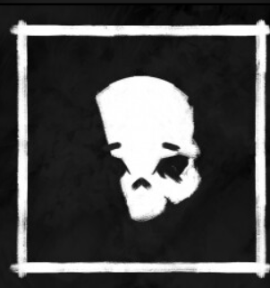
Сором’язливий привид. Рідко атакує, якщо поруч багато людей.
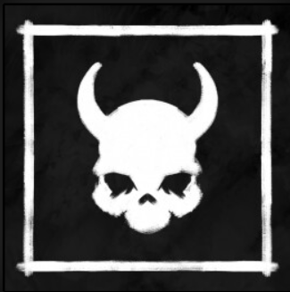
Атакує частіше за інших. Один з найнебезпечніших.
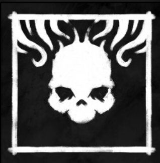
Сильно впливає на розум. Закриває двері.
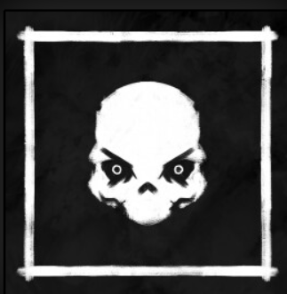
Дуже активний. Часто показується гравцям.
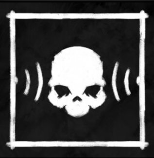
Реагує на голос. Не говори поруч із ним.
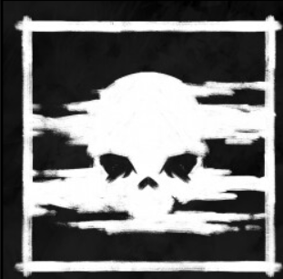
Любить холод. Швидший при низькій температурі.
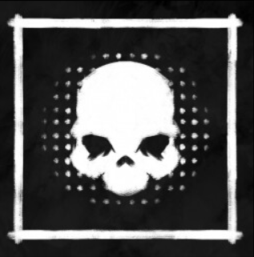
Видимий тільки через камери.
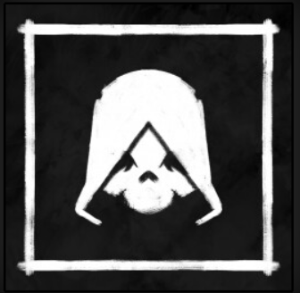
Тихий під час полювання. Його важко почути.
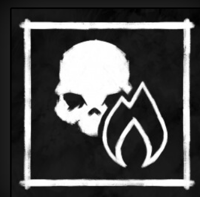
Боється вогню. Свічки можуть його зупинити.
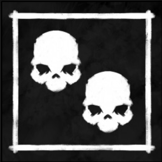
Два привиди, що діють разом.
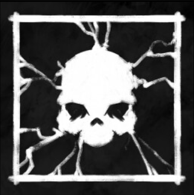
Швидкий біля електроніки.
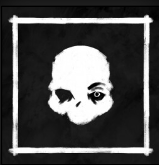
Може змінювати форму. Іноді залишає особливі сліди.
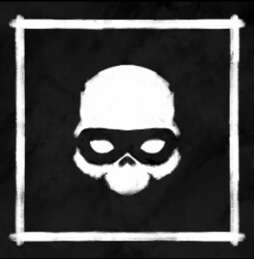
Копіює інших привидів. Дуже підступний.
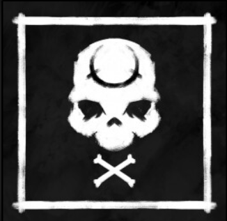
Стає сильнішим, коли гравці слабшають.
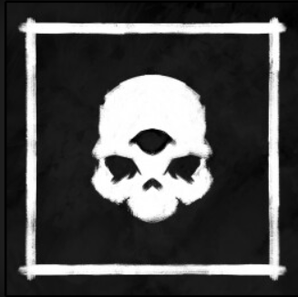
Завжди знає, де ти. Але повільний поруч.
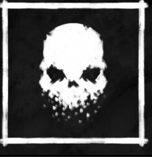
Старіє з часом і стає слабшим.